#1 骨架构建线索 · 来源3153963
原文US4677129A例15(b)核实为二烯酰亚胺光照生成3-氮杂双环[3.1.1]庚烷二酮。确实构建相关桥环，但目标是不同氧化态、N取代、双酯/环外双键及立体组合；不能把它当作目标可直接套用的路线。
US04677129 ['p-0222']；来源分数16；系统标签structure_clue
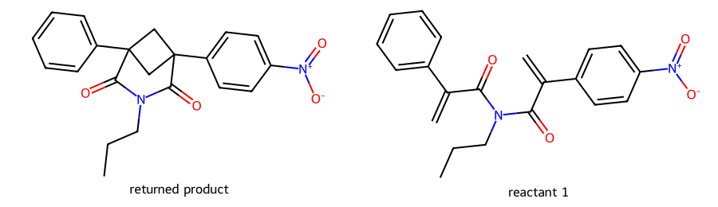
期望先由化学结构确定；下面的判断来自实际底物/产物及原文，不按程序标签认定成功。当前仅U4找到较明确的关键成环类比；U1/U3有相关骨架构建线索但未证明能迁移到完整目标，U2仍缺肼基安装的库内直接依据。外部文献单独列在report.md，不计入数据库召回。
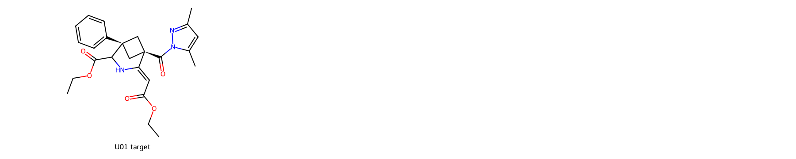
3.51秒 → 2.50秒；任务预算均未变，仍为部分召回。
原文US4677129A例15(b)核实为二烯酰亚胺光照生成3-氮杂双环[3.1.1]庚烷二酮。确实构建相关桥环，但目标是不同氧化态、N取代、双酯/环外双键及立体组合；不能把它当作目标可直接套用的路线。
US04677129 ['p-0222']；来源分数16；系统标签structure_clue

丙二酸单乙酯盐到酸的转换不构建目标桥环，仅共有酯/酸局部片段。
EP97902712A1 ['p0281']；来源分数16；系统标签structure_clue
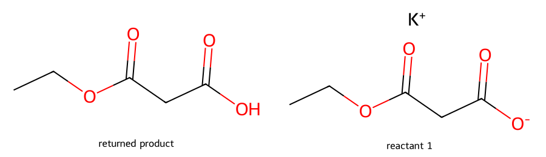
源图显示环丁烷酰胺/酯闭合为桥环酰亚胺，但原文还把三唑上的丁基变为羟丙基，KOtBu操作不能据此证明这项链变化；保留闭环线索但需核对源结构。
US20220251061A1 ['p-1349']；来源分数13；系统标签structure_clue
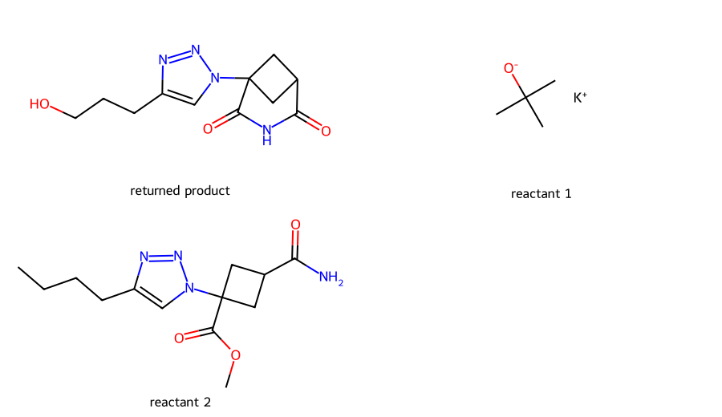
丙烯酸与乙酸形成简单酯相关产物，不提供目标含氮桥环或立体构建。
US20140378702A1 ['p-0115']；来源分数16；系统标签local_method
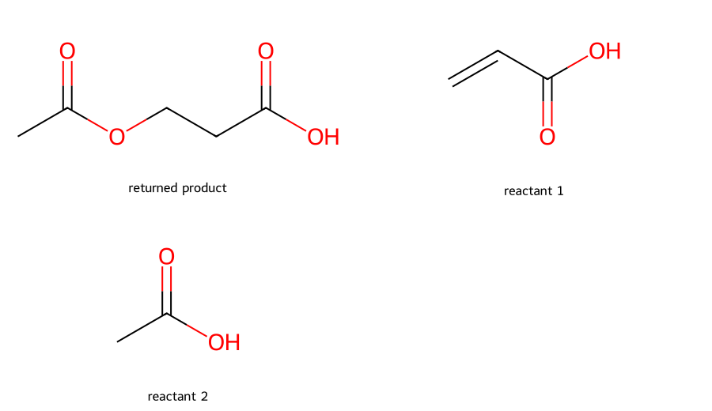
苯并杂环的转换不能解决目标含氮桥环及酰基吡唑连接。
US20100098634A1 ['p-0661']；来源分数12；系统标签structure_clue
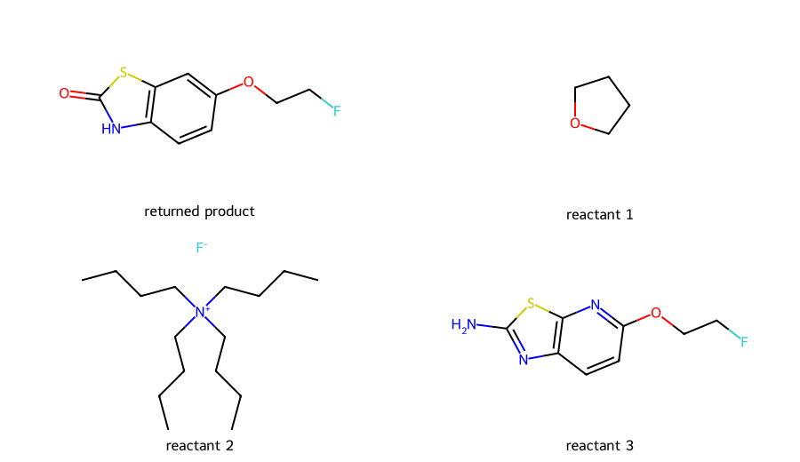
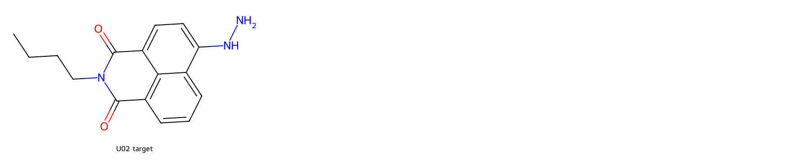
5.64秒 → 1.87秒；任务预算均未变，仍为部分召回。
同一N-丁基萘酰亚胺母核的芳氯被二胺取代，原文76%，说明对应芳位可作亲核取代。目标要换成肼，N-N保留与酰亚胺耐受性仍需肼本身的先例，不能由二胺反应直接证明。
US20020010279A1 ['P-0200']；来源分数19；系统标签modification
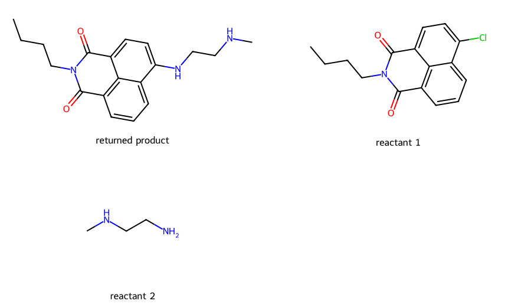
原文为带二甲氨基的酸酐与乙醇胺生成N-羟乙基萘酰亚胺，库中产物却是无取代NH酰亚胺，丢失多个明确取代基，不应作为该目标正例。
US20100168428A1 ['p-0198']；来源分数15；系统标签structure_clue
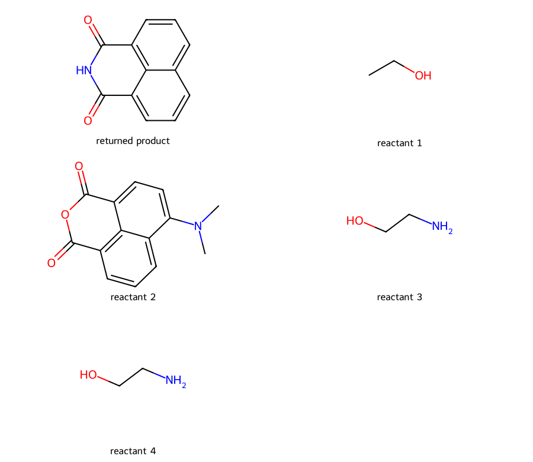
原文使用长链伯胺制N-长链萘酰亚胺，产物图却丢掉N侧链，不可按该图做目标前体或转化推断。
US20090056793A1 ['p-0088']；来源分数16；系统标签structure_clue
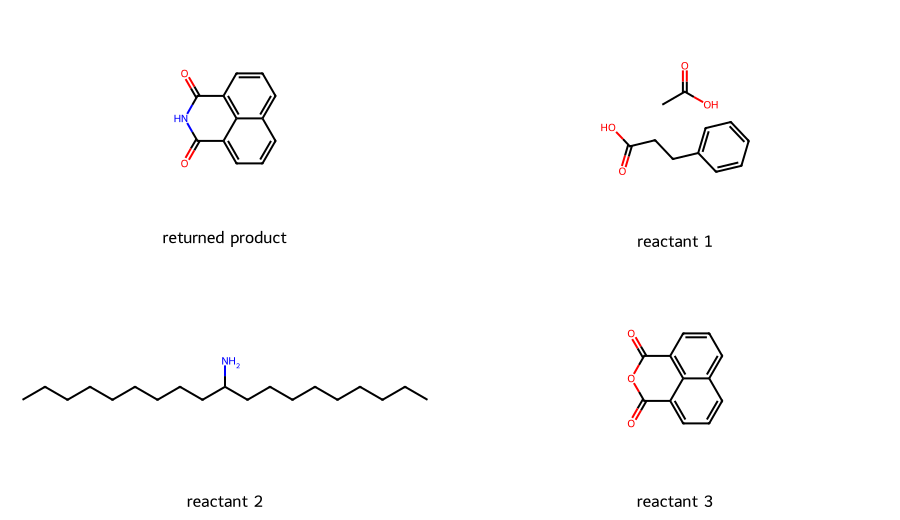
材料是在反应物使用通道出现；原文LiAlH4还原酰亚胺羰基，目标需要保留酰亚胺，不能当作目标制备。
EP98966352B1 ['p0137']；来源分数18；系统标签usage
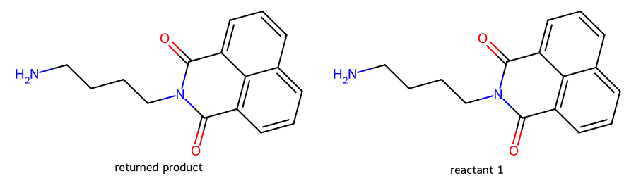
此条仍未定位原段落，底物/产物图不能提供明确芳位肼基安装依据。
US05202318 ['p-0172']；来源分数16；系统标签structure_clue
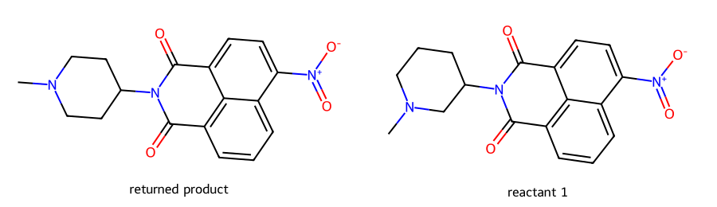
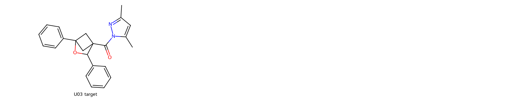
5.50秒 → 2.73秒；任务预算均未变，仍为部分召回。
原文I2促带醇的亚甲基环丁烷闭环为2-氧杂双环[2.1.1]己烷，确实形成O桥。但产物是碘甲基/二甲基/甲酯取代，目标是双苯基和酰基吡唑；取代位置及后续变换未证实，不能称目标已找到直接方法。
US20250221996A1 ['p-0442']；来源分数18；系统标签local_method
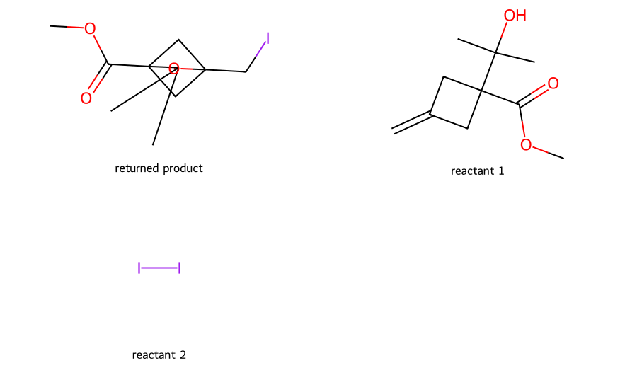
酰肼与乙酰丙酮形成N-酰基二甲基吡唑具有目标把手对应，但当前原段落未定位，输入磺酰基位置还有疑点；即使成立也不解决含氧桥环的建立。
US04007201 ['p-0050']；来源分数15；系统标签local_method
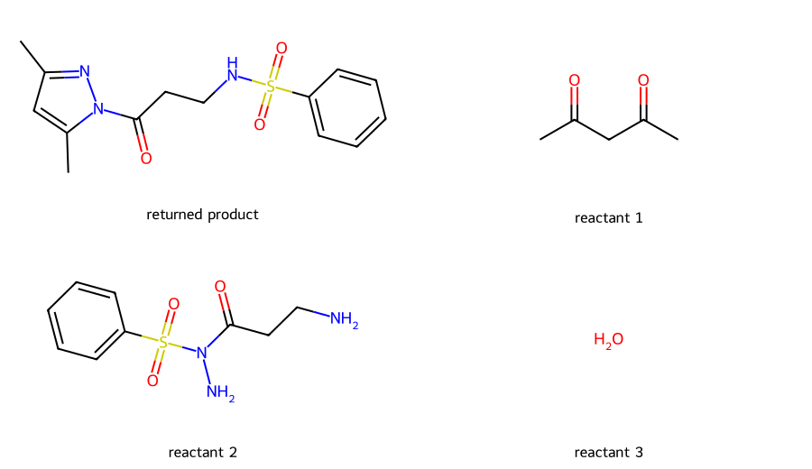
苯并杂环转换没有建立目标O桥环或其取代图式。
US20100098634A1 ['p-0661']；来源分数12；系统标签structure_clue

列出的羧酸与脂肪胺按常见酰胺化应得到该胺的酰胺，库中却出现不同N-酰基吡唑连接，当前不足以认定为目标把手制备。
EP10781918B1 ['p0385']；来源分数16；系统标签local_method
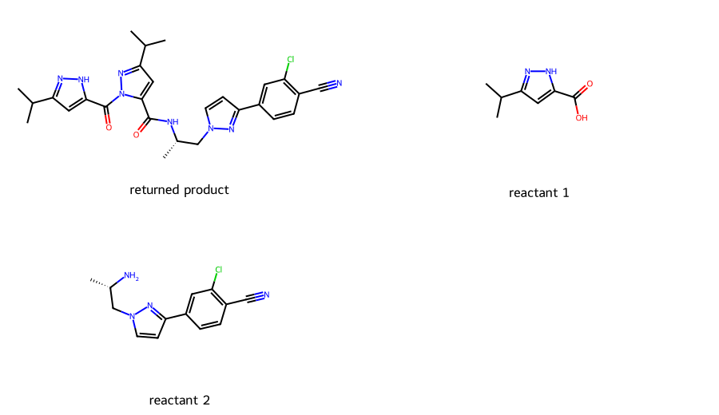
原文明确用氧桥环胺替换模板中的甲氧乙胺；抽取仍保留甲氧乙胺与旧底物，使图上凭空出现桥环。这不是桥环形成反应。
EP22723850B1 ['p0601']；来源分数13；系统标签local_method
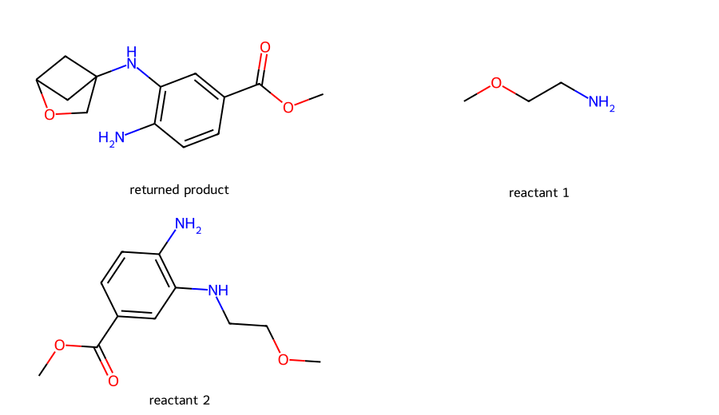
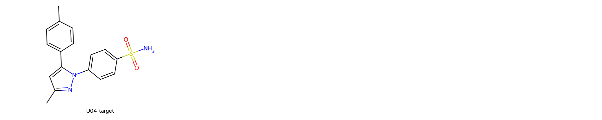
7.06秒 → 2.61秒；任务预算均未变，仍为部分召回。
原文磺酰氯与羟胺生成N-羟基磺酰胺，目标是NH2磺酰胺且3位甲基；该例不能证明目标吡唑成环或所需终产物已制得。
EP06765404B1 ['p0056']；来源分数21；系统标签structure_clue
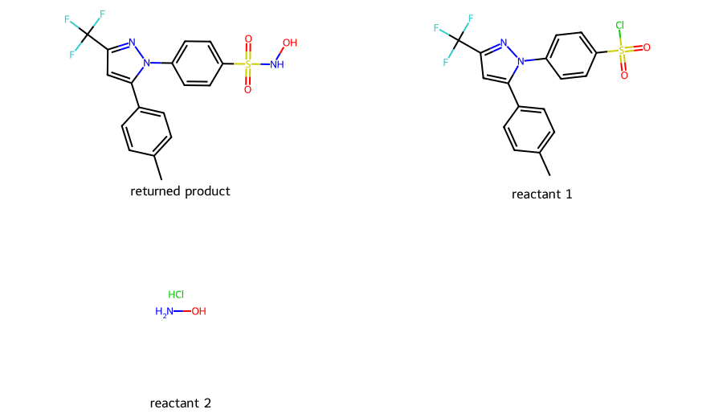
原文明确芳基肼与芳基1,3-二酮缩合构建N-芳基吡唑，并给出5-对甲苯基/3-CF3的连接。目标须更换为相应甲基二酮及磺酰胺芳基肼，区域选择性仍要验证。
US20010047023A1 ['P-0035']；来源分数15；系统标签structure_clue
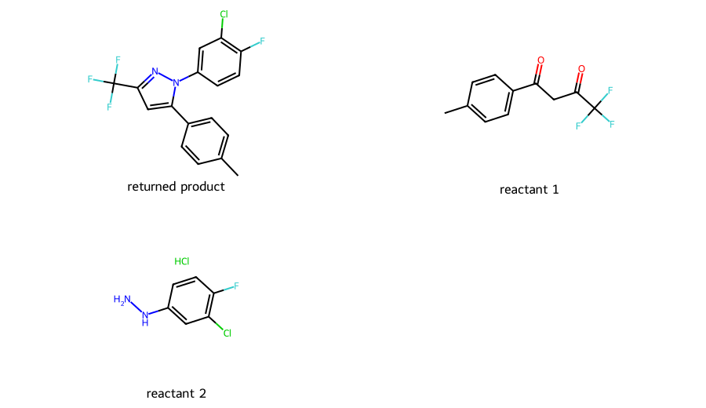
酯水解得到吡唑乙酸，而目标需要该位甲基；本条不包含把侧链转成甲基的证据，不能自行补出脱羧成功结论。
US20070060629A1 ['p-0286']；来源分数16；系统标签structure_clue
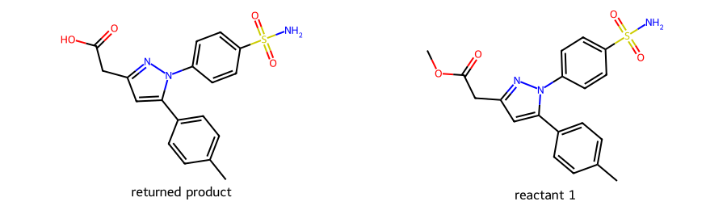
原文磺酰胺芳基肼与芳基1,3-二酮缩合形成同一连接类型的吡唑，报告53%。与目标的关键N-N及N-芳基位置一致；CHF2换CH3及芳环取代变化可能影响区域选择性，不能等同目标成功率。
US20020183362A1 ['P-1771']；来源分数17；系统标签local_method
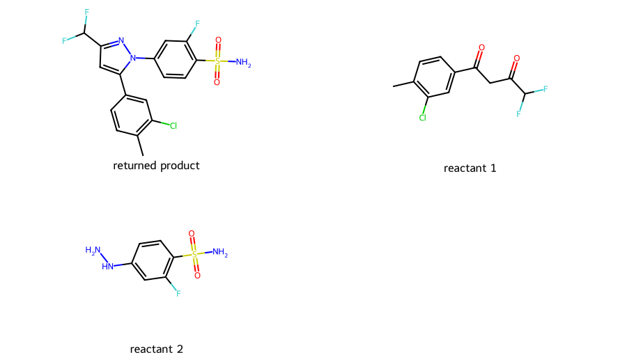
苯并杂环转换不解决目标吡唑或芳磺酰胺的构建。
US20100098634A1 ['p-0661']；来源分数12；系统标签structure_clue